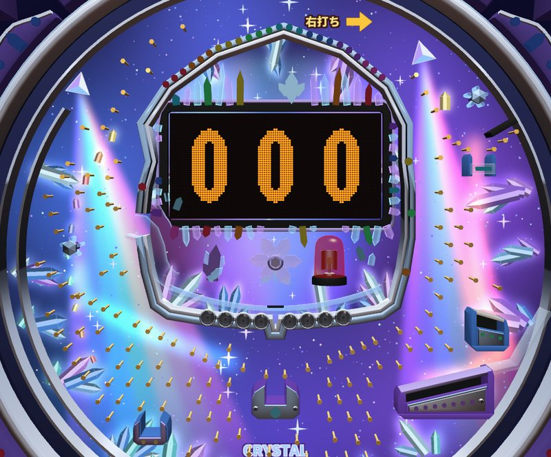
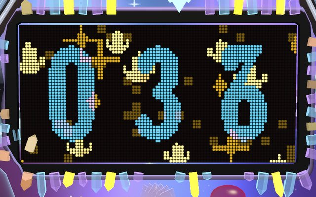

最後更新：2026-11-24（週二）
CRYSTAL

新機台。突破型的ST機。啟動口大當有一半直接進入Crystal RUSH（ST 12次），另一半是3R通常，之後在時短50次裡爭取拉回。有右打。島的前排（南側）西端共4台。
規格
| 大當機率 | 1/119.8 |
|---|---|
| RUSH中 | 1/8.0 |
| RUSH | ST 12次（Crystal RUSH） |
| 繼續率 | 約80% |
| 時短 | 50次（3R通常之後） |
| 突入率 | 約67%（含拉回） |
| 回合 | 10R、3R（每R 10個計數） |
| 出珠量 | 10R約800顆、3R約240顆 |
| 賞球 | 啟動口3、電動入口7、大獎口8、入賞口3 |
| 機械割 | 約141%（試算） |
※突破型是只有一部分初次大當會進入RUSH的類型。時短50次的拉回機率約34%。盈虧平衡線調查中。
大當分配
| 入賞口 | 10R（ST） | 3R（ST） | 3R通常（時短50次） |
|---|---|---|---|
| 啟動口 | 5% | 45% | 50% |
| 電動入口（電チュー） | 40% | 60% | 無 |
※777是10R，其他奇數是3R的ST，偶數是3R通常。偶數也有升格機會。電動入口的大當全部是ST。
普圖、電動輔助
| 通常 | RUSH、時短 | |
|---|---|---|
| 普圖中獎 | 1/16 | 9/10 |
| 普圖變動 | 12秒 | 1.2秒 |
| 電動入口開啟 | 0.15秒×1次 | 1.6秒×2次 |
※電動入口的賞球有7顆，所以RUSH和時短期間鋼珠幾乎不會減少。
打法
- 力道是自動的。佔台後會用最容易轉的力道發射
- 大當、RUSH、時短中會自動右打
- 盤面和釘子跟STAR PARADE完全不同
| 左打 | 沿著一長排釘子到左上的風車。道釘坡度很陡，有2處會漏珠 |
|---|---|
| 右打 | 依序是右肩風車下面的通過閘門、右側中間偏下的電動入口、右下橫長的大獎口 |
模式（Crystal RUSH、時短）
| 模式 | 機率 | 辨認方式 |
|---|---|---|
| 通常 | 1/119.8 | 一般的邊框。待機畫面會捲動「◆ CRYSTAL ◆」 |
| Crystal RUSH | 1/8.0 | 光繞著液晶邊框轉，上方顯示剩餘次數。盤面的結晶之花會打開並發光 |
| 時短 | 1/119.8 | 藍色邊框。上方顯示剩餘次數 |
- ST大當之後是RUSH（ST 12次、1/8.0）。12次內中獎就再次進入RUSH，沒中就回到通常
- 進入時會出現「クリスタルRUSH!」（Crystal RUSH！）
- 3R通常之後是時短50次。右打瞄準電動入口，電動入口中獎就進入RUSH
- RUSH和時短都是剩5次起開始倒數
盤面與役物
液晶四周圍著結晶，上方是像結晶切面一樣的多面穹頂。顯示屏下方是結晶之花役物和警示燈。花平時是花苞，超級Reach以上會微微打開，大當中和RUSH中會完全打開並發光。



※機台和盤面的照片是進貨前拍的。現在數字是淺藍色，啟動口下方的釘子也比較少。
演出信賴度
信賴度和STAR PARADE一致，只有預告的名字不同。
※信賴度是出現該演出時最後中大當的比例（解析值，通常時）。50%以上和確定以紅字表示。
保留顏色
| 顏色 | 信賴度 |
|---|---|
| 藍 | 1.7% |
| 綠 | 7.0% |
| 紅 | 31.0% |
| 金 | 64.1% |
| 彩虹 | 確定 |
Reach（聽牌）
| 演出 | 信賴度 |
|---|---|
| 普通Reach | 3.1% |
| 超級Reach | 25.4% |
| 全迴轉 | 確定 |
| 最終決戰（PUSH） | 51.6% |
預告
| 顏色 | 結晶雪預告 | 稜鏡預告 |
|---|---|---|
| 整體（不分顏色） | 1.3% | 18.4% |
| 白 | 0.2% | 3.5% |
| 藍 | 0.7% | 10.1% |
| 綠 | 1.7% | 23.1% |
| 紅 | 6.3% | 52.9% |
| 金 | 23.5% | 83.8% |
| 彩虹 | 確定 | 確定 |
預兆（在上方奔跑的角色）
| 演出 | 信賴度 |
|---|---|
| 夥伴（3隻） | 1.1% |
| 大遊行（6隻） | 2.6% |
| 金 | 12.9% |
| 彩虹 | 66.0% |
Reach中的預告
| 演出 | 信賴度 |
|---|---|
| 結晶雪預告 | 14.8% |
| 稜鏡預告 | 30.2% |
階段預告
| 演出 | 信賴度 |
|---|---|
| 到階段1 | 4.3% |
| 到階段2 | 10.6% |
| 到階段3 | 34.1% |
| 到階段4 | 66.9% |
| 到階段5 | 91.0% |
擬似連
| 演出 | 信賴度 |
|---|---|
| ×2 | 6.0% |
| ×3 | 28.7% |
| ×4 | 50.9% |
確定演出
彩虹保留、黑屏、變動開始時的警示燈、復活、凍結、全滅燈
階段預告和擬似連的信賴度與STAR PARADE相同。其他演出請看STAR PARADE的演出信賴度（CRYSTAL沒有星星役物）。數字轉法的信賴度調查中。
演出解說
數字與轉法
數字是淺藍色、像切割過的結晶一樣的字。平常的轉法是「結晶」，數字會斜著切換。偶爾也會用縱向、倒轉、翻頁、滾筒、洗牌的方式轉。


| 機種 | 數字 | 平常的轉法 |
|---|---|---|
| STAR PARADE | 橙色 | 縱向流動 |
| RABBIT HOLE | 粉色的圓鼓鼓的字 | 蹦跳（數字跳起來換掉） |
| CRYSTAL | 淺藍色的結晶字 | 結晶（斜著切換） |
保留
保留燈在顯示屏下方，啟動口和電動入口各4個。顏色是藍、綠、紅、金、虹，從金色開始算激熱，虹色是確定。
預告
- 結晶雪預告偏弱。小結晶搖晃著落下，偶爾閃出十字光
- 稜鏡預告偏熱。稜鏡從左邊進來，右邊的結晶之花從花苞、半開到盛開，發光並旋轉。後面有光束
- 兩種都有6級顏色（白、藍、綠、紅、金、虹）。稜鏡的紅色起算激熱，虹色是確定
- 預告在Reach中也會出現。預兆是在上方條帶裡奔跑的小結晶和花


Reach
- 超級Reach中，點陣顯示上的結晶和花會加油。右邊的花從花苞打開，中獎的話會盛開（花瓣變成虹色）並旋轉
- 進入超級Reach時，盤面的結晶之花也會微微打開
- 最終決戰時點陣顯示前面會出現PUSH按鈕。51.6%
警示燈
顯示屏下方右邊的旋轉燈。轉了就是大當。時機與STAR PARADE相同。
特殊演出、隱藏要素與小知識
※有劇透。點擊展開
特殊演出（大當確定）
| 演出 | 內容 |
|---|---|
| 黑屏 | 變動開始時長時間暗轉，然後直接進入全迴轉 |
| 凍結 | 變動開始的同時一切停住、聲音消失，閃光後直接進入全迴轉 |
| 全滅燈 | 液晶和機台的燈飾全部熄滅、聲音也沒了，閃光後直接進入全迴轉 |
| 變動開始時的警示燈 | 旋轉一開始警示燈就轉 |
| 虹 | 虹色保留、虹色預告（結晶雪、稜鏡） |
| 全迴轉 | 只在黑屏、凍結、全滅燈之後出現。333或777連線。轉到最後，以虹色停下 |
| 復活 | 超級Reach裡先裝成沒中，然後中獎 |
※黑屏、凍結、全滅燈只會在通常時的ST大當出現。每一種都又長又華麗，然後直接連到全迴轉（333或777）。
隱藏要素
- 升格機會：以偶數連線的大當結束時會出現「昇格チャンス」（升格機會），連線的數字重新轉動。停在奇數就是「確変昇格!!」（確變升格！！）進入RUSH，停在偶數就是「チャンスタイム!」（機會時間！）進入時短50次。3R的ST中有30%是先以偶數連線再升格，3R通常中有40%是挑戰升格卻失敗
- 保留先讀：保留進來時，看到的顏色可能比真實顏色低1～2級。等待期間會一級一級往上升，沒升完的部分會在變動開始時的機會提升裡補上。變動開始時只是白色保留閃一下，就是假演出
- 機會區：先讀的區間。前面有2個以上保留時才會出現。沒中的時候，只有會變成超級Reach的那幾轉才出現
小知識
- 機會目311：沒有Reach的未中，停在311時會發出金光並彈跳。60.7%。不會碰巧停在311
- 擬似連停下的數字是123、456這樣的連號。「もう一回!」（再來一次！）的字依序升為綠、紅、金
- RUSH、時短中不會出現預告、階段預告、擬似連和變動開始演出
- 玄學①～⑤是有效的（店內玩法）
數據計數器

機台上方有大當、連莊、開始、上次4項和店內人數。休息區的狀況板上也能看到（CRYSTAL的色帶是淺藍色）。